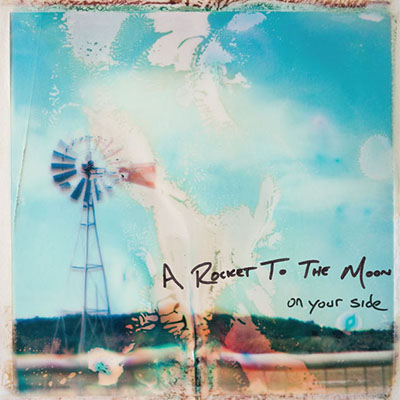
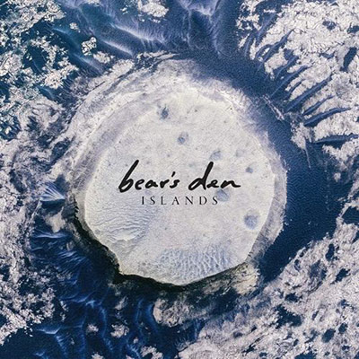
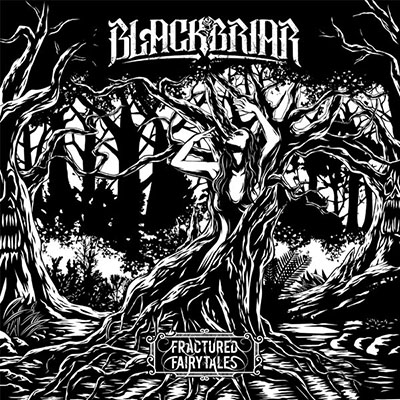
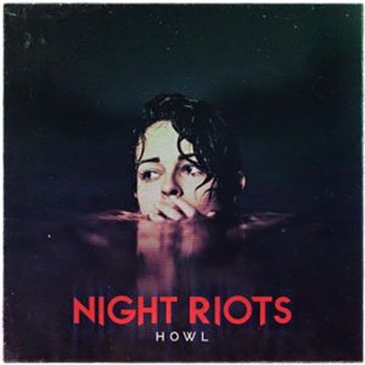
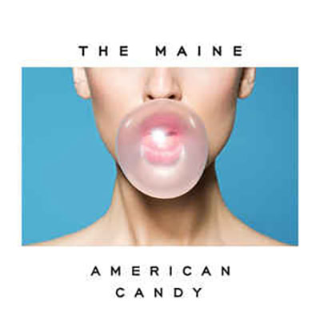

A rocket to the moon
On your side
- Annabelle - 3:14
- Mr. Right - 3:07
- She's Killing Me - 3:08
- On a Lonely Night - 3:08
- Dakota - 3:23
- Life of the Party - 2:44
- Like We Used to - 3:23
- Where Did You Go? - 3:07
- Sometimes - 2:52
- Baby Blue Eyes - 3:39
- Give a Damn - 3:24
- On Your Side - 3:10

Bear's den
The Islands
- 01 - Again
- 02 - The love We Stole
- 03 - Above the clouds of pompeii
- 04 - Isaac
- 05 - Think of England
- 06 - Magdalene
- 07 - When you break
- 08 - Stubborn beast
- 09 - Elysium
- 10 - Bad Blood

Blackbriar
Fractured Fairytales EP
- Prelude - 1:07
- Preserved Roses - 4:02
- Deadly Nightshade - 4:22
- Fractured Fairytale - 3:44
- Until Eternity - 4:39
- Witching Hour - 3:24

Night Riots
Howl
- Oh my heart - 3:12
- Contagious - 3:36
- Holsters - 4:00
- Break - 4:07
- Shine - 3:19
- Follow You - 3:43
- Contagious (orchestral rendition) - 4:30
- Because The Night - 3:29
- Contagious (five knives remix) - 5:50
- break (new beat fund remix) - 3:38
- contagious (mazill remix) - 3:51

The maine
American Candy
- Miles Away - 3:38
- Same Suit, Different Tie - 3:18
- My Hair - 3:15
- English Girls - 3:13
- 24 Floors - 3:43
- Diet Soda Society - 3:00
- Am I Pretty? - 3:02
- (Un) Lost - 3:45
- American Candy - 3:48
- Another Night on Mars - 4:26
The maine
Black and white
- Don't stop me now - 3:36
- Right girl - 3:37
- Growing up - 4:00
- Fuel to the Fire - 3:11
- Inside of you - 3:51
- Every Road - 3:37
- Lister to your heart - 3:15
- Saving Grace - 3:53
- Give it to me - 2:42
- Color - 3:41
- Right Girl (accoustic version) - 3:24
- Inside of you (accoustic version) - 3:10